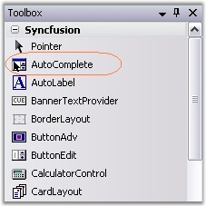
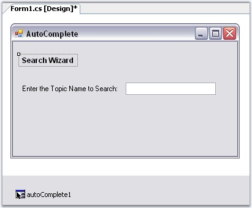
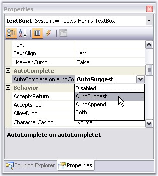
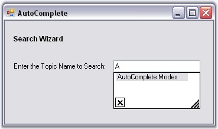
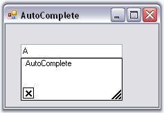

This section will guide you to implement a simple AutoComplete control with a TextBox via designer and programmatically.
This tutorial illustrates the usage of the AutoComplete control for TextBox, without any external data source.
1. Create a new Windows Forms application and open the main form for the application in the designer. Add the Syncfusion controls to the VS .NET toolbox, if you have not done so already. Drag-and-drop an AutoComplete control onto the form.

Figure 112: AutoComplete control in Toolbox
2. The AutoComplete control will appear as a component in the component tray of the design environment. Similarly add a Text box, two labels and a button to make the form interactive.

Figure 113: AutoComplete control in the Designer
3. When the AutoComplete control is added to the form, the AutoComplete on autocomplete property is added to the text box control properties. This property specifies the type of autocompletion to be provided by the autoComplete1 control for the comboBox1 control. The default value for AutoComplete on autoComplete1 will be set to AutoCompleteModes.Disabled. Use the drop-down box provided in the property grid to change it to the mode of autocompletion to AutoSuggest. The different modes of autocompletion are detailed in AutoComplete Modes topic.

Figure 114: Setting AutoCompleteMode = "AutoSuggest"
4. Set AutoComplete.AutoAddItem property to true. Run the application, type any text in the textbox and hit Enter to save the entry. Select the text, delete it and then retype the first letter of the text you saved. You should see autocompletion of the letter, as shown below.
 Note: The text entered can be saved only
when AutoAddItem property is set to True.
Note: The text entered can be saved only
when AutoAddItem property is set to True.

Figure 115: AutoCompletion of text in the TextBox
Note: We can also add a list of autocomplete
items through designer, which can used as a source for AutoComplete control.
SeeSee Source
for AutoComplete Control topic for details.
See also
This section will guide you, to programmatically add, and associate an AutoComplete control to a textbox.
1. Include the required namespace.
|
[C#]
using Syncfusion.Windows.Forms.Tools; |
|
[VB.NET]
Imports Syncfusion.Windows.Forms.Tools |
2. Create an instances of AutoComplete and TextBox controls.
|
[C#]
private Syncfusion.Windows.Forms.Tools.AutoComplete autoComplete1; private System.Windows.Forms.TextBox textBox1;
this.textBox1=new TextBox(); this.autoComplete1=new AutoComplete(); |
|
[VB.NET]
Private autoComplete1 As Syncfusion.Windows.Forms.Tools.AutoComplete Private textBox1 As System.Windows.Forms.TextBox
Me.textBox1 = New TextBox() Me.autoComplete1 = New AutoComplete() |
3. Associate AutoComplete with TextBox using SetAutoComplete() method.
|
[C#]
this.autoComplete1.SetAutoComplete(this.textBox1,Syncfusion.Windows.Forms.Tools.AutoCompleteModes.AutoSuggest); |
|
[VB.NET]
Me.autoComplete1.SetAutoComplete(Me.textBox1,Syncfusion.Windows.Forms.Tools.AutoCompleteModes.AutoSuggest) |
4. Specify its properties.
|
[C#]
this.autoComplete1.AutoAddItem=true; this.autoComplete1.AutoSerialize=true; |
|
[VB.NET]
Me.autoComplete1.AutoAddItem=True Me.autoComplete1.AutoSerialize=True |
5. Finally add textBox to the Form.
|
[C#]
this.Controls.Add(this.textBox1); |
|
[VB.NET]
Me.Controls.Add(Me.textBox1) |

Figure 116: AutoCompletion of a TextBox Text
See also